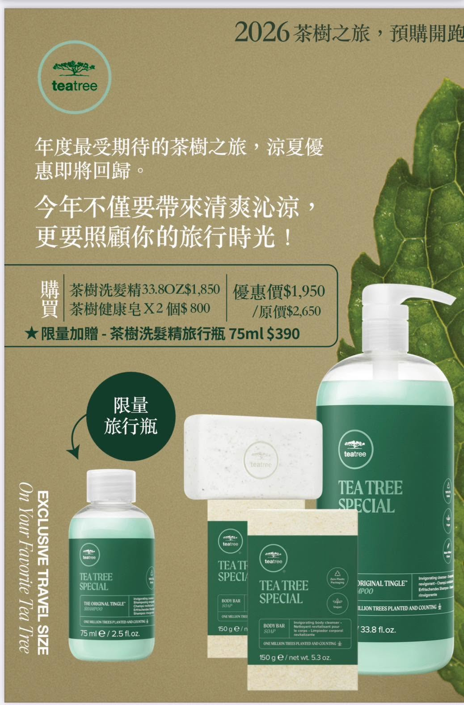

Can the wrong shampoo make flakes worse?
Dry powder-like flakes often need moisture and soothing care. Strong anti-dandruff cleansing may make the scalp drier.

Japanese Minimal Luxury Hair Salon
Serving the local community for over 50 years, ALICE focuses on thoughtful consultation, hair condition assessment and practical hair science, creating styles that feel refined and easy to live with.
Before booking, you can send photos of your current hair, past color or perm history, and your preferred style. The stylist will assess what is achievable and suggest a suitable process.
Designers
Each stylist has a different consultation style and design strength. Get to know the team before booking and find the service direction that fits you best.

Hair condition assessment, color and perm planning, and clear hair science explanation.

Stable mature design, natural daily styling and soft dimensional color.

Careful communication, fresh styling and essential daily hair maintenance.

Haircut proportion, hair flow control and refined mature styling.
Hair Science Classroom
Led by Jay, this section turns color, perm, scalp, hair condition and product principles into clear explanations, helping every choice feel more confident.
Dry powder-like flakes often need moisture and soothing care. Strong anti-dandruff cleansing may make the scalp drier.
The scalp adapts to climate changes. Shedding, itchiness and flakes may relate to oil-water balance and cleansing habits.
It is not always the shampoo losing effect. Your scalp condition changes, and the formula should follow that need.
The key is hair strength and on-site assessment. Before bleaching, it is also important to understand possible risks.
News
Promotions, product updates, schedule notices and recruitment information are updated here.

The Tea Tree summer offer returns with shampoo, body bars and a limited travel-size gift. Only a few sets remain.
Read More
A lightweight repair oil for permed hair ends, shine and softness. Promotion price: NT$1,000.
Read MoreALICE will be closed on Aug 30 and Sept 7, 13, 21 and 27. On Sept 3, IRIS, CINDY and SHERRY will provide volunteer haircuts for children in Jianshi Township.
Read More
Customer Trust
ALICE values every consultation and service flow, helping clients understand what suits their hair and daily routine.
From booking to in-salon consultation, clients can understand service direction and care advice.
Before color or perm services, stylists check hair texture, scalp condition and past service history.
Long-term service in Nankan has built a familiar salon relationship clients return to.
From booking to finishing, each detail is handled with attention to the client experience.
Years of haircut, color, perm and care experience support practical, personalized advice.
Reservation
Send your current hair photos, preferred style and available time through LINE. ALICE will help match the right stylist and service time.